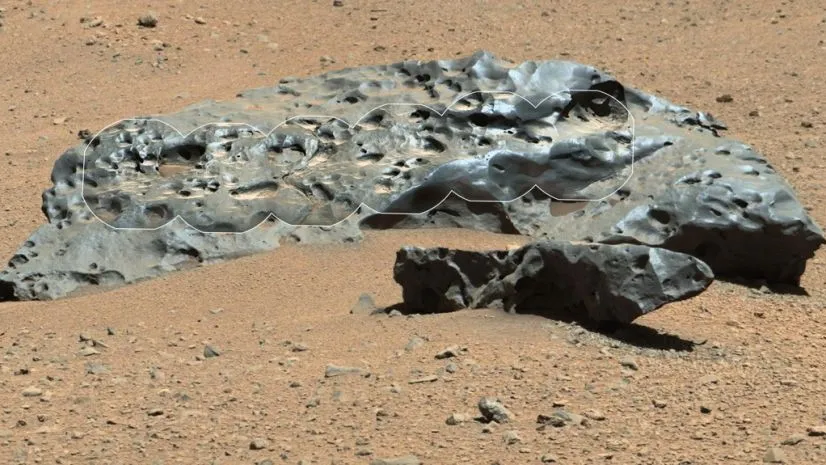
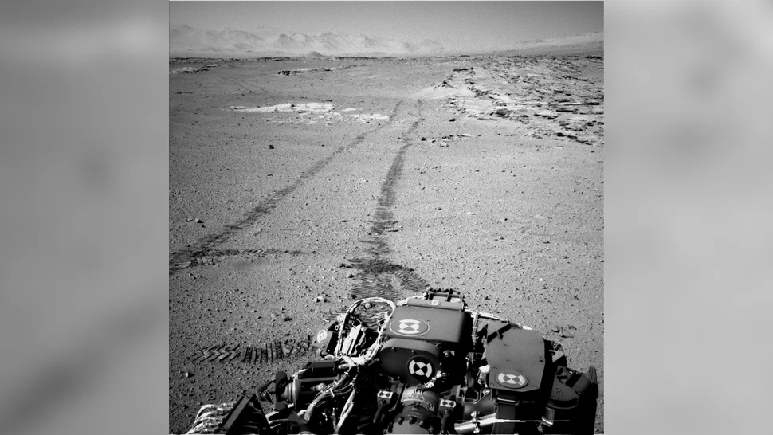
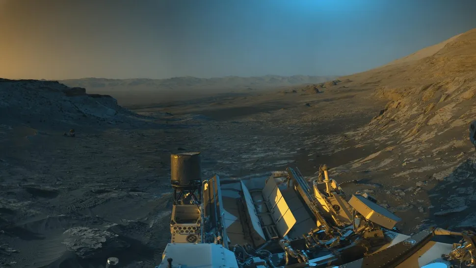
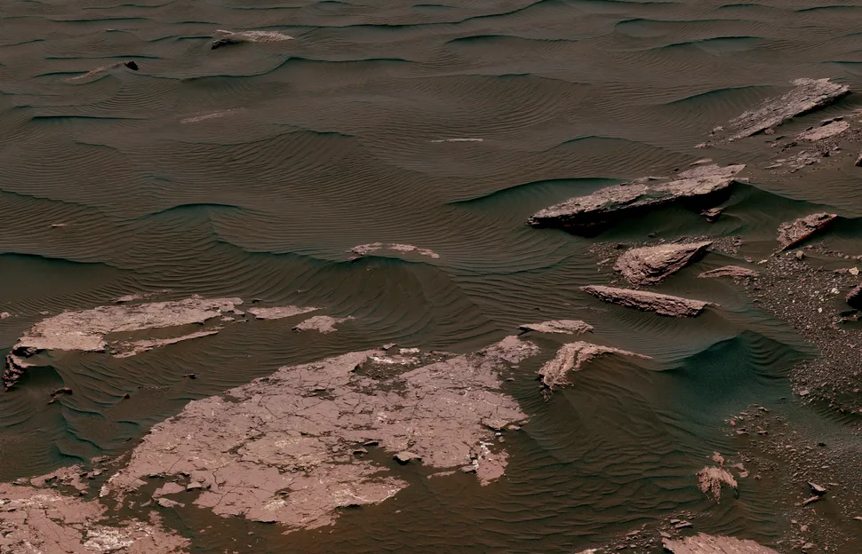
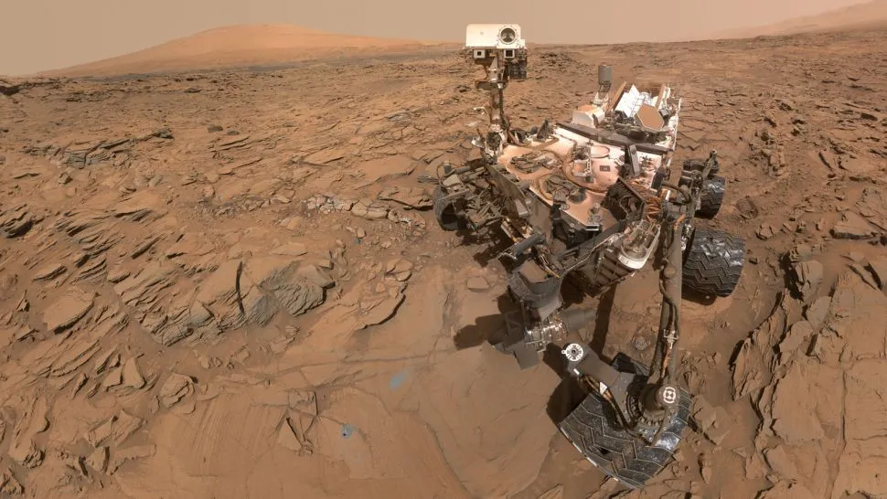
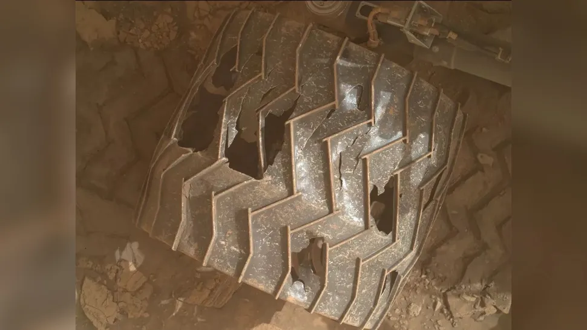

Curiosity Rover
Mission Overview
Launch Date
November 26, 2011
Landing Date
August 6, 2012
Status
Active
Mission
Mars Science Laboratory
Accomplishments
- Discovered evidence that ancient Mars had the right chemistry to support living microbes
- Found evidence of ancient water-lake environments that could have supported life
- Detected organic molecules in rocks and seasonal methane in the atmosphere
- Studied Mars' climate and geology to assess whether favorable conditions for life existed
Explore 3D visualisation
The curiosity is a car-sized rover exploring Gale Crater and Mount Sharp on Mars, seeking evidence of past habitability, including organic molecules and geological clues
Click here->Team
- Dr. Ashwin Vasavada - Project Scientist
- Jennifer Trosper - Project Manager
- Matt Wallace - Deputy Project Manager
- Over 500 scientists and engineers from around the world
Raw images captured by the rover





